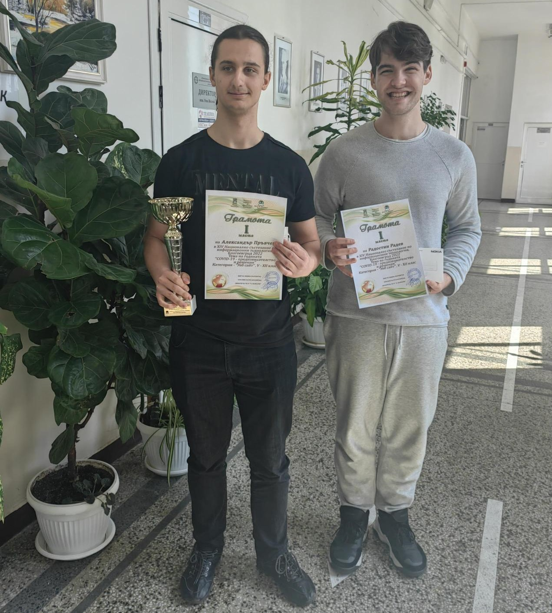
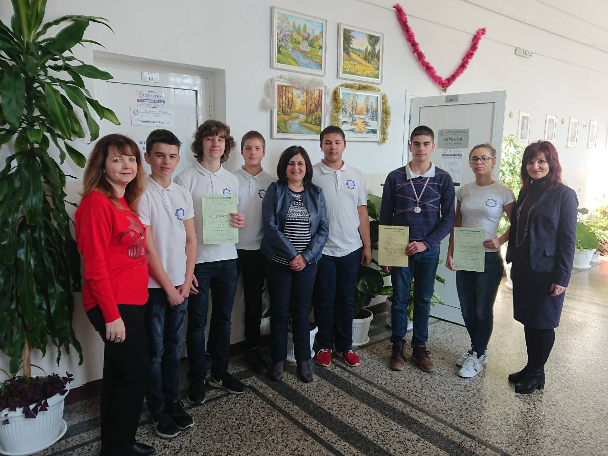
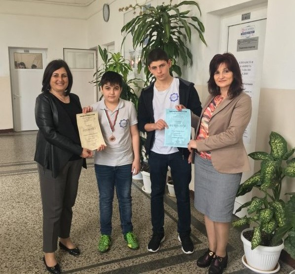
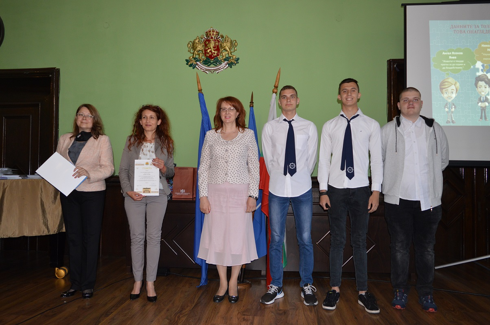

МАТЕМАТИКА И ИТ - СЪСТЕЗАНИЯ, ОЛИМПИАДИ, ТУРНИРИ
Национално математическо състезание „Европейско кенкуру”
2023-2024г.
Грамоти за постигнати високи постижения в Национално математическо състезание „Европейско кенкуру” 2023-2024 учебна година получиха Себастиян Киров от Хз клас и неговият учител Даниела Живкова, които за поредна година постигнаха високи постижения в това престижно математическо състезание.
2011-2012г. НАЦИОНАЛЕН КРЪГ НА ОЛИМПИАДАТА ПО ИТ
Класирани са : ЕМАНУИЛ ЯКИМОВ, ГАЛИН БАХЧЕВАНОВ, АЛЕКСАНДЪР ЯНЕВ X ж клас
НАЦИОНАЛНАТА ОЛИМПИАДА ПО ИТ 13-15 май 2013г.
ДИМИТЪР ИВАНОВ ОТ 12и КЛАС СЕ КЛАСИРА НА ПЪРВО МЯСТО В категория „Приложни програми“ със своя проект MuzikBox
2020г. - НАЦИОНАЛНО СЪСТЕЗАНИЕ ПО ИТ - гр.Пазарджик
На 20.02.2020г. в ПГМЕТ гр.Пазарджик се проведе Националното състезание по Информационни технологии. Състезанието бе с практическа насоченост – изработка на макетен проект на уебсайт. Учениците от 9з клас Кристиан Илиев и Максим Евтимов, които представяха ПГМЕЕ се представиха отлично и категорично завоюваха I място.
2022г. - XIV НАЦИОНАЛНО СЪСТЕЗАНИЕ ПО ИТ гр.Благоевград
Отборът на ПГМЕЕ – Александър Пръвчев и Радостин Радев от 12 з клас събраха 151 точки с представянето на своя проект – сайт за гейминг ревюта и спечелиха първото място от общо 23 проекта в категория “Уеб сайт” на Националното състезание по ИТ.
ПРИЗОВИ МЕСТА В ИНДИВИДУАЛНОТО И ОТБОРНО КЛАСИРАНЕ НА МАТЕМАТИЧЕСКОТО СЪСТЕЗАНИЕ „СВ. НИКОЛАЙ ЧУДОТВОРЕЦ“ В БУРГАС
Турнирът се организира съвместно с РУО на МОН ежегодно от 1998 г. в дните преди 6 декември, празника на град Бургас. Започва само със състезание по математика, а от 2001 г. включва и състезание по информационни технологии. Участници са ученици от 3 до 12 клас от Бургас и областта. От 2012 г. състезанието включва и ученици от 2 клас, а от 2017 г. – и от 1 клас. Досега в състезанието са участвали ученици от 27 български града.
2013 -2014г.
Отборно класиране 11 клас - II място
Индивидуално класиране - Георги Динев 11з клас II място
2015 – 2016г.
Отборно класиране 8 клас – II място
Отборно класиране 9 клас – II място
Отборно класиране 10 клас – III място
Отборно класиране 11 клас – II място
При индивидуалното класиране се отличиха:
Иван Великов Желязков 8 клас – I място
Дончо Стоянов Донев 8 клас – II място
Явор Милков Михайлов 9 клас – I място
Павлин Цветомиров Иванов 9 клас – II място
Йордан Кирилов Траев 9 клас – III място
Георги Димитров Драгнев 12 клас – III място
МАТЕМАТИЧЕСКОТО СЪСТЕЗАНИЕ „СВ. НИКОЛАЙ ЧУДОТВОРЕЦ“ В БУРГАС
КОЛЕДНО МАТЕМАТИЧЕСКО СЪСТЕЗАНИЕ:
2015г.
На 13.12.2015г. се проведе XXIII Коледно математическо състезание в ОУ“Братя Миладинови“ гр.Бургас. В него взеха участие 36 ученици от 11 клас от ПГМЕЕ. Те се представиха достойно, заеха челните позиции в класирането и се окичиха с 3 медала, 3 грамоти и купата за отборно класиране. Призови места заеха:
Денчо Стефанов Бъчваров – XIЕ клас - Iво място
Жулиян Иванов Димитров – XIз клас - IIро място
Михаил Атанасов Атанасов – XIз клас - IIIто място
Денис Йоханов Топалов – XIг клас - грамота
Тодор Станиславов Тодоров – XIз клас - грамота
Християн Желязков Димитров – XIа клас - грамота
2017г.
На 09.12.2017г. се проведе традиционното XXV Коледно математическо състезание за ученици от I до XII клас. Ученици от VIII, IX, X, XI и XII класове от ПГМЕЕ взеха активно участие. Второ място завоюва Данаил Германов Германов от IXи клас, който бе награден със сребърен медал и грамота. За отлично представяне бяха наградени с грамоти Станислав Тихомиров Павлов от VIIIз клас и Галина Светославова Иванова от Xи клас.
НАЦИОНАЛНО ВЕЛИКДЕНСКО МАТЕМАТИЧЕСКО СЪСТЕЗАНИЕ:
2016г.
На 23.04.2016г се проведе XXII Великденско национално математическо състезание. В него взеха участие 45 ученици от 11 клас на ПГМЕЕ. Те се представиха достойно, заеха челните позиции в класирането и се окичиха с медали, грамоти, купата за отборно класиране и най-масовото участие в състезанието. Призови места заеха:
Живко Антоанов Пеев – II място – 11и клас
Иван Михайлов Иванов – III място – 11и клас
Камелия Антонова Касабова – III място – 11А клас
Лания Чунг Нгуен – грамота – 11Г клас
Живко Константинов Нейчев – грамота – 11Г клас
Руслан Веселинов Андонов – грамота – 11З клас
2018г.
В XXII Национално Великденско математическо състезание от I до XII клас, организирано от съюза на математиците в България секция „Изток“ от ПГМЕЕ участваха ученици от IX и XI клас, които се представиха достойно. Веселин Павлов от IXи клас се класира на III място и бе награден с бронзов медал и грамота. Грамота за участие получи и Живко Желев от IXи клас.
ЕВРОПЕЙСКА ОЛИМПИАДА ПО СТАТИСТИКА ЗА УЧЕНИЦИ
2018 - 2019г.
Резултатите от тестовете на сформираните два отбора - DIGITALE (осмокласници) и DECONOMY (единадесетокласници) , ги класират за Втори етап. Отбор DIGITALE постига ТРЕТО място в крайното класиране на Националния кръг.
2020г.
Първия етап на националния кръг завършиха успешно 226 отбора от Категория А и 82 отбора от Категория Б, сред които и отборите на ПГМЕЕ- 2 отбора от категория А и един отбор от категория Б. До втория етап бяха допуснати и направиха своите презентации 185 отбора от Категория А и 64 отбора от Категория Б.
Отборите на ПГМЕЕ преодоляха успешно първия етап на националня кръг на олимпиадата и се представиха много добре на втория кръг, като са с много високи резултати – съответно –отбор „ECONSTAT“ с ръководител инж. Татяна Ботева с общ резултат от двата кръга -74,75 точки и отборите на г-жа Георгиева „MANDMTEAM“ -с общ резултат : 82.35 точки и STATCOMP – с общ резултат 83,73 и най-доброто – 7 място в класацията на категория Б.
2021г.
Ученици от ПГМЕЕ се включват за втори пореден път в националния кръг на Международния конкурс за статистически плакат. В надпреварата са се включили общо 757 ученици от 98 училища в 38 града, обединени в 301 отбора. Успешно представилите се в националния кръг два отбора от ПГМЕЕ и Търговска гимназия получиха грамоти от Председателя на НСИ, г-н С. Цветарски и от областния управител проф. Мария Нейкова.
